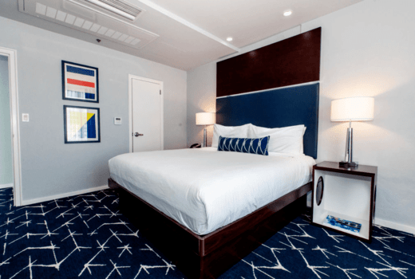

King Room
 The king room offers many amenities our guests enjoy. With a luxurious king-sized bed, soft
sheets, heavenly pillows, the king room is perfect for any couple or lone traveler. Inside the room,
there’s a desk with several USB chagrin ports. You can easily set up a laptop to do work, play
games, or simply pull out a book and read. The room also comes with a large dresser with a
television on top. The television has hundreds of free channels. There’s also a minifridge, a small
safe, and an ironing board located in the closet. Last, but not least, there’s a refined bathroom.
The bathroom is filled with complimentary shampoo, conditioner, soap, lotion, and anything else you
might need. This room is perfect for resting and relaxing.
The king room offers many amenities our guests enjoy. With a luxurious king-sized bed, soft
sheets, heavenly pillows, the king room is perfect for any couple or lone traveler. Inside the room,
there’s a desk with several USB chagrin ports. You can easily set up a laptop to do work, play
games, or simply pull out a book and read. The room also comes with a large dresser with a
television on top. The television has hundreds of free channels. There’s also a minifridge, a small
safe, and an ironing board located in the closet. Last, but not least, there’s a refined bathroom.
The bathroom is filled with complimentary shampoo, conditioner, soap, lotion, and anything else you
might need. This room is perfect for resting and relaxing.
Twin Room
 The twin room offers an option for a traveling duo. Whether you’re missionary companions or two
friends traveling, this is the room for you. The room is a bit smaller than the queen room, but it’s
still luxurious and refined. The sheets are soft and the pillows are heavenly soft. The room still
has a television with free channels, a minifridge, and a safe. There are two nightstands and a
closet for storage. The bathroom is filled with complimentary shampoo, conditioner, soap, lotion,
and anything else you might need. This room is the most economic way to travel while still receiving
the same luxuries.
The twin room offers an option for a traveling duo. Whether you’re missionary companions or two
friends traveling, this is the room for you. The room is a bit smaller than the queen room, but it’s
still luxurious and refined. The sheets are soft and the pillows are heavenly soft. The room still
has a television with free channels, a minifridge, and a safe. There are two nightstands and a
closet for storage. The bathroom is filled with complimentary shampoo, conditioner, soap, lotion,
and anything else you might need. This room is the most economic way to travel while still receiving
the same luxuries.
Double Queen Room
 The double queen room is the perfect option for traveling families or a couple duo. With two of
our heavenly queen beds, this room is one of the largest available at the hotel. The room is
equipped with one nightstand, a dresser, a television, and a quaint desk. The desk is perfect for
setting up a laptop to work, play games, or just pull out a book and read. The bathroom is filled
with complimentary shampoo, conditioner, soap, lotion, and anything else you might need. This room
is perfect for larger groups.
The double queen room is the perfect option for traveling families or a couple duo. With two of
our heavenly queen beds, this room is one of the largest available at the hotel. The room is
equipped with one nightstand, a dresser, a television, and a quaint desk. The desk is perfect for
setting up a laptop to work, play games, or just pull out a book and read. The bathroom is filled
with complimentary shampoo, conditioner, soap, lotion, and anything else you might need. This room
is perfect for larger groups.
Studio Room

And last but not least, we have a studio room. This is the largest room available to our
guests. Equipped with a heavenly king bed, the room has many extra amenities to offer. There’s a
small living area, equipped with a couch, a small table with chairs, and a television. There are two
minifridges and two safes in the studio room. The closet is twice the size of our other closets. And
last but not least, the bathroom is a perfect place to refresh yourself. The bathroom is filled with
complimentary shampoo, conditioner, soap, lotion, and anything else you might need. This room is
perfect for anyone looking for a luxurious stay.